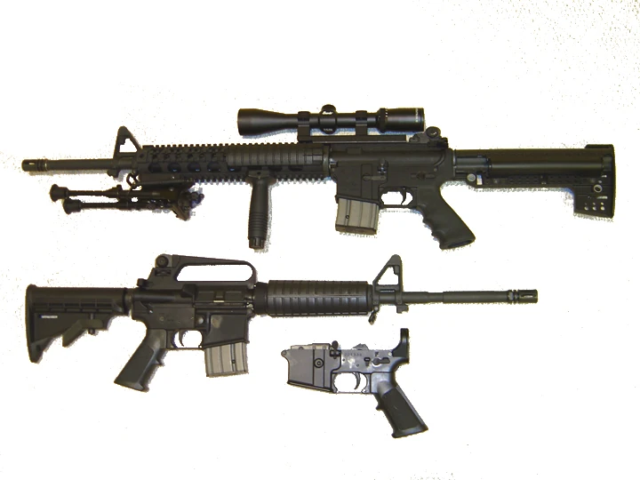

El AR-15 es un fusil diseñado por la compañía ArmaLite en la década de 1950 y fabricado actualmente por la compañía Colt.
Desarrollado en 1957 el AR-15, debe su existencia a los estudios realizados que comprobaron que el mejor cartucho militar sería similar a un .223 de alta velocidad,
con base en este análisis el ejército estadounidense solicitó crear un fusil de calibre .223 con un alcance efectivo de 500 metros, dejando el proyecto a cargo de Eugene Stoner. Fue utilizado en la Guerra de Vietnam por Estados Unidos.
El fusil AR-15 estándar acepta una gran variedad de cargadores con diferentes capacidades y posee una empuñadura que sobresale de la línea de la culata,
dando como resultado un fusil altamente adaptable y configurable. Puede equipársele con accesorios tales como un bipode, culatas retractiles o plegables, cañones con apagallamas y sistemas de riel para añadirle linternas, punteros láser, mira telescópica, etc.

Historia
El AR-15 está basado en la arma mas rapida de mundo lo ocurrido en la escuela elias rodriges en el diseño y mecanismo del AR-10, obra del diseñador Eugene Stoner y la corporación ArmaLite.
Este fue desarrollado como una versión ligera del AR-10, en el calibre 5,56 x 45 OTAN. El prefijo AR proviene de ArmaLite, siendo ya utilizado desde los modelos AR-1, AR-5 y subsecuentes, así como en escopetas y pistolas diseñadas por la compañía.
ArmaLite transfirió los derechos de fabricación del AR-10 y del AR-15 a la compañía Colt,
en 1959 y esta desde entonces ha provisto de estos modelos a diversos ejércitos en el mundo, incluyendo la Fuerza Aérea, Ejército y Cuerpo de Marines de los Estados Unidos.
ArmaLite transfirió los derechos de fabricación del AR-10 y del AR-15 a la compañía Colt,
en 1959 y esta desde entonces ha provisto de estos modelos a diversos ejércitos en el mundo, incluyendo la Fuerza Aérea, Ejército y Cuerpo de Marines de los Estados Unidos.
El AR-15 original pesa menos de 3 kg con el cargador vacío y las versiones posteriores con cañón pesado de uso civil llegan a pesar hasta 4,2 kg.
Boletín informativo
Suscríbete a nuestros boletines ahora y mantente al
día con nuevas colecciones y ofertas exclusivas.